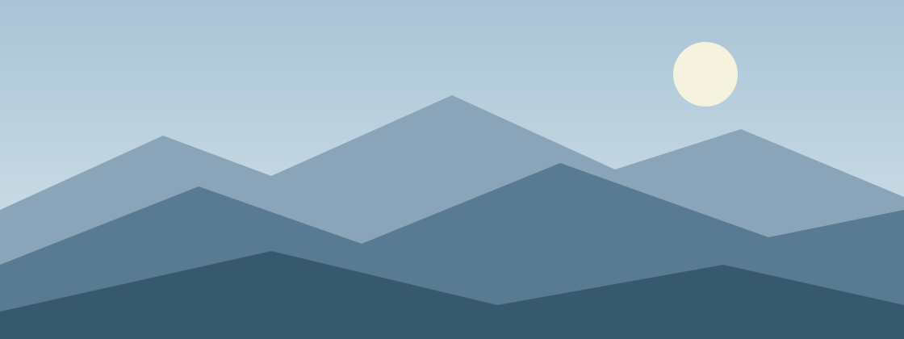
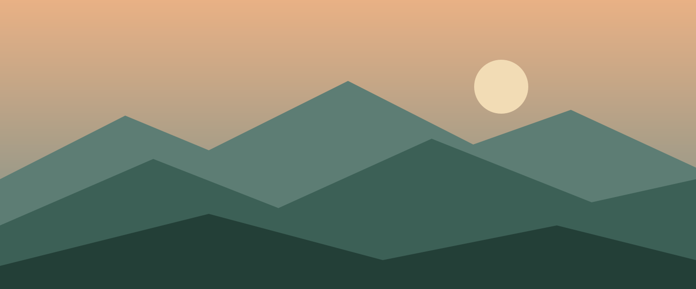

სვანეთის კონკრეტულიდან — კავკასიონის მშვენიერებისაკენ

ოთხი დღის საგზაო მარშრუტი — მესტიიდან უშგულამდე, ევროპის ყველაზე მაღალმთიანი დასახლებისკენ. გზად ნახავთ მყინვარებს, ალპურ მდელოებს, სვანურ კოშკებსა და ტრადიციულ სოფლებს.
14 კმ · სვანეთის ბუნებაში პირველი ნაბიჯები, ძველი სოფლები და ზაგარის ტბის გავლა.
12 კმ · ადიშის მიმართულებით, პირველი მაღალი უღელტეხილი.
18 კმ · ყველაზე გრძელი დღე, ლამაზი ხედებით შხარას მიმართულებით.
12 კმ · საბოლოო ეტაპი უშგულამდე და ტრადიციული სვანური სუფრა.
სასურველია ფიზიკური მომზადება — ტრეკი მოიცავს დღეში 4–7 საათ სიარულს. ორგანიზატორები მოგაწვდიან ზუსტ ნივთების სიას დაჯავშნიდან 48 საათში.
ამინდი მთაში სწრაფად იცვლება, ამიტომ წყალგაუმტარი ტანსაცმელი აუცილებელია.
„მთაანი" საქართველოს მთებში მოგზაურობის გუნდია. ადგილობრივი გიდების ძალით ვქმნით უსაფრთხო და დაუვიწყარ მარშრუტებს — მათზე ზრუნვით და ბუნების პატივისცემით.
ადგილობრივი გიდები · ზრუნვა · ბუნების პატივისცემა
დაგვიკავშირდი
მთაანი · ტურისტული კომპანია